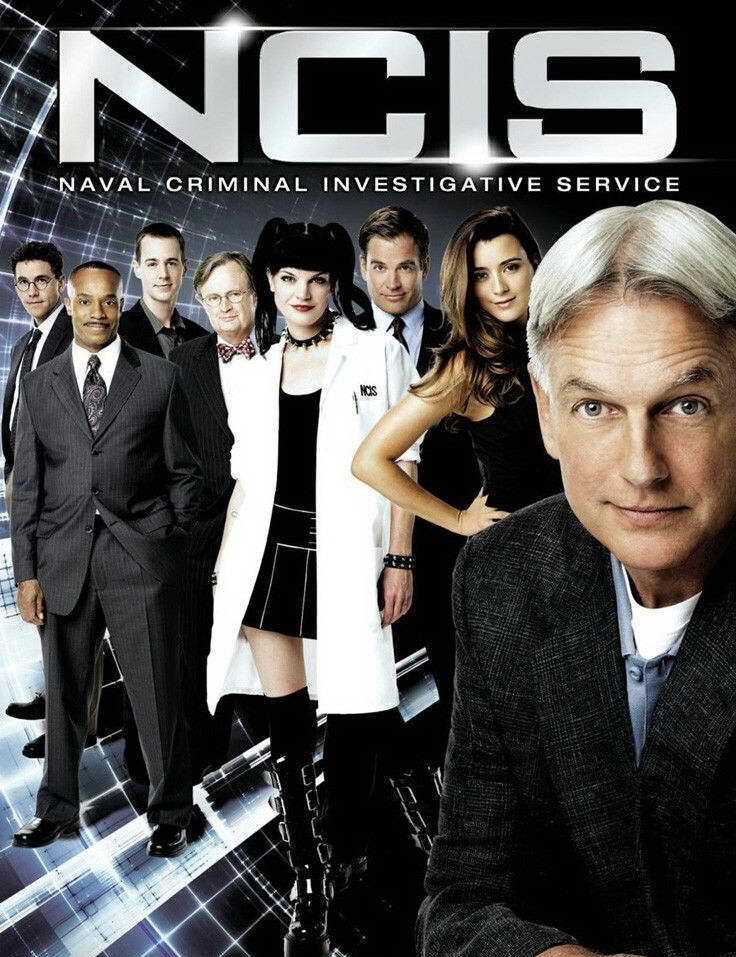

I looove crime shows. I watch other shows like anime, action, mystery and comedy but crime is definitely my favourite of them all to watch. I have watched crime shows since I was little with my mom every dinner it was always NCIS, NCIS Los Angeles, Private Eye, Person of Interest or some other crime show that we would sit down and watch an episode or two. So after watching so many I'd like to share my personal top 5 crime shows that I have watched.
For me there is only 1 option for first place and that is NCIS.
NCIS was my childhood I would watch it every single day nearly with my mom for dinner and together we would work out who committed the crime alongside
the characters until eventually we got so good we started figuring it out before hand and instead would joke about how bad the characters were that they hadn't solved it yet either.
The show has many characters with some who come and go which let it have a constant mix of new stories to tell using new characters as well as long grown bonds between longer lasting members.
The show is able to handle many relationships very well showing how characters grow more fond of each other and learn to get along,
some even finding love but it seems completely natural and not just because its a TV show which is always very good to see.
Growing up NCIS was something I absolutely loved and was part of my childhood and so for me it absolutely deserves first place.

Second place has to go to Person of Interest for its amazing story telling and how it introduces the idea of a SAI (Super Artificial Intelligence) to its audience.
Person of Interest follows our protagonists as they work to prevent crimes before they happen in New York city.
They are given this info from a SAI that was built by one of the protagonists after 9/11 and given to the government to stop future terrorist threats,
however while building it he realised that it predicted not just terrorist attacks but all pre meditated crimes and so he had to sort it into to lists,
one that would cause mass losses of life and ones that wouldn't.
The government only cared about the mass losses of life but not being able to live with ignoring the other list of people who would die
he decided to work together with a former spy to protect these people from the shadows.
All of that was just season one. In later seasons they get into far more with overarching storytelling,
exploring the history of their characters as well as introducing great new characters as well.
Best of all tho it shows how a Super Artificial Intelligence would act,
hide itself and most of all how it could effect all of our lives when made properly and when made improperly.

In third place is Mentalist a show that follows the main character Patrick Jane as he works with the other main characters a group of detectives to solves murders,
kidnappings and other crimes. However what makes this show and Jane special is that Jane is a mentalist meaning he is a master of the human psyche,
he can predict what your thinking enough to make it seem like he's reading your mind,
he can look around your house and know how your marriage is going off of the wine rack and bedsheets,
his ability to read people like a book can never be understated and this allows him to manipulate people into confessing to their crimes unintentionally
or leading the police straight to the body or murder weapon.
Overall this show is amazing and it does a great job of showing how strong being intelligent and knowing how people work can truly be.
Looking at fourth place we have Lucifer the show where the devil himself decides to come to LA for a holiday from hell.
Lucifer is a show where Lucifer Morningstar has been living on earth for quite a while in LA living his best life
in a penthouse apartment in the skyscraper that he owns and runs his very own club out of.
But one day when someone he knows is killed outside his club in front of him and detective Chloe Decker shows up to solve the case
he decides he is going to help and tags along for the case, much to the dismay of Chloe Decker.
However they find that they work well together and decide to work together with the show going on to explore more magical themes as it continues, easing the audience into it.
The show also does a good job of not making the show a religious message and pushing an agenda and instead they sort of tell their own story just with Christianity as a base.
Overall this show is a very good mix of low fantasy crime and I would highly recommend it to anyone.

Finally in fifth place but by no means last there is White Collar, a pure crime show with a devilishly handsome protagonist named Neal Caffrey (No relation).
Neal Caffrey was a criminal mastermind who used to steal the worlds most beautiful artwork around the world,
he was a master art forger, bonds forger, art forger, sculptor forger and every other type of forgery there is on top of being a master thief,
cunning and quick on his feet and thinking, and a ladies man able to swoon any woman he came across.
With all of these talents he went on for years as a thief until one day he was caught by our second protagonist Peter Burke an FBI team lead who had been chasing Neal for years.
However what neither of them ever saw coming was years after his arrest Neal would help Peter solve crimes as a CI in exchange for his limited freedom on a tracking anklet. What started as a rivalry/enemies soon becomes a close and strong friendship as Neal and Peter work together on many cases while Neal also gets up to his sneaky shenanigans behind the curtains.
However what neither of them ever saw coming was years after his arrest Neal would help Peter solve crimes as a CI in exchange for his limited freedom on a tracking anklet. What started as a rivalry/enemies soon becomes a close and strong friendship as Neal and Peter work together on many cases while Neal also gets up to his sneaky shenanigans behind the curtains.

Here is a table of when all of these shows began and stopped airing and with how many seasons they had in case you are interested in watching.
| Name | Starting Season | Final Season | Number of Seasons |
|---|---|---|---|
| NCIS | 2003 | On-going | 22 |
| Person of Interest | 2011 | 2016 | 5 |
| Mentalist | 2008 | 2015 | 7 |
| Lucifer | 2016 | 2021 | 6 |
| White Collar | 2009 | 2014 | 6 |